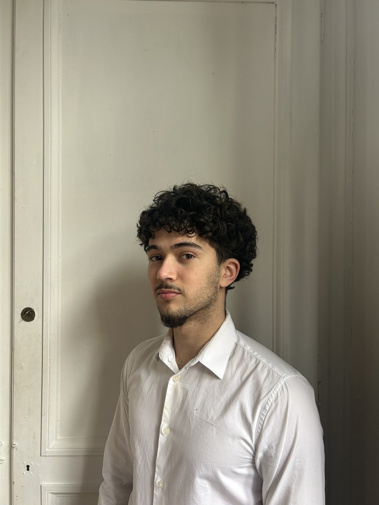

18 ans · 1ère année à l'IESEG School of Management · Lille
Étudiant en management, passionné de boxe, de piano et de mangas. J'aime les défis qui demandent de la discipline et de la créativité. En ce moment j'apprends aussi à construire des sites web — et j'adore ça.
🧠 Mon site favori : Human BenchmarkLa boxe m'a appris la discipline et la rigueur. S'entraîner régulièrement, encaisser les coups et revenir plus fort — une philosophie que j'applique aussi dans mes études et ma vie quotidienne.
Le piano est mon espace de liberté. J'aime explorer différents styles, du classique à l'improvisation. Il y a quelque chose de très logique dans la musique — pas si éloigné du code finalement.
Les mangas m'ont toujours fasciné par la richesse de leurs univers et la profondeur de leurs personnages. J'adore les récits qui poussent à la réflexion comme Berserk ou Vinland Saga.